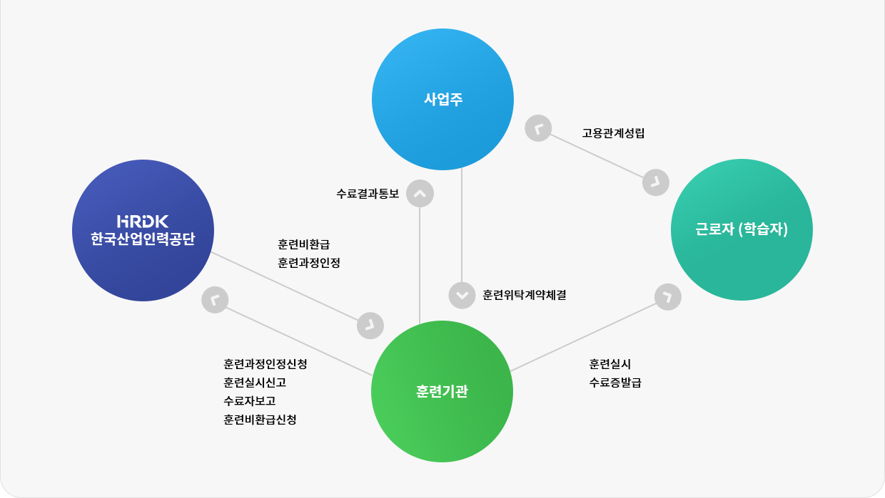
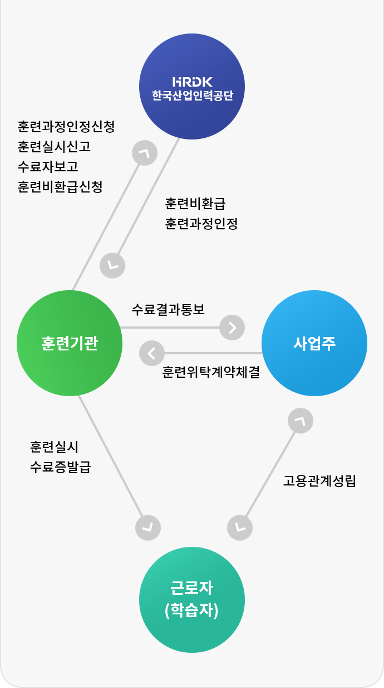
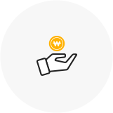
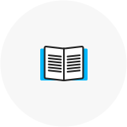
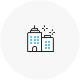

Refund process
직장인의 직무능력향상과 자기개발을 지원하기 위해, 개인과 사업주의 교육비 부담을 줄여주는 정부지원제도이며, 고용보험에 가입한 사업장(회사)이라면 누구나 이용 가능합니다. 한국안전평생교육원 고용보험훈련기관은 이와 같은 고용보험환급제도가 적용되는 “사업주 훈련”을 실시하는 원격훈련기관입니다.
2016년도까지 고용보험환급과정을 수강하는 기업이 위탁훈련기관에 교육비를 사전에 납부하고 수료 후 교육비를
환급 받았으나,2017년부터 위탁훈련기관에 교육비를 납부하는 절차가 사라지고 위탁훈련기관에서 산업인력공단에
직접 교육비를 환급받는 제도가 시행됩니다.
사업주훈련 지원절차
 ※ 우선지원 대상기업의 해당 여부는 근로복지공단에 문의하시기 바랍니다. (1588-0075)
아래조건을 모두 만족하여야 환급대상이 될 수 있습니다.
1. 학습자가 고용보험에 가입이 되어있어야 합니다.
2. 소속된 직장의 사업주가 고용보험 환급과정을 신청한 학습자의 교육비를 전액 지원해야 합니다.
3. 학습자는 수강한 교육과정을 수료하여야 합니다.
사업주 위탁훈련 비용신청 절차 변경으로 인하여, 2017년 2월 개강 과정부터는 별도의 환급신청절차가 생략됩니다.
교육 종료 및 수료 후 약 30일 이내 교육비를 지급한 법인 명의의 계좌로 환급액이 입금됩니다.
(수강신청 시 법인 명의 계좌 정보를 정확히 입력하지 않을 경우, 환급이 지연될 수 있습니다.)
단, 교육 미수료자는 교육비 환급을 받을 수 없습니다.
아래조건을 모두 만족하여야 환급대상이 될 수 있습니다.
진도율 100% 필수, 최종평가 응시 필수, 과제 제출 필수 총 100점 만점 기준으로 60점이상 취득 시 수료 가능합니다.
교육과정 미수료 시에는 교육비 환급을 받으실 수 없습니다.
보험요율의 적용과 고용안정사업 및 직업능력개발사업의 실시에 있어서 우선적으로 고려하는 기업을 말하며,
산업별 상시 근로자의 수가 다음과 같을 경우에는 우선지원대상기업에 해당됩니다.
※우선지원 대상기업의 해당여부는 근로복지공단에 문의하시기 바랍니다.
산업분류
분류기호
상시 사용하는 근로자 수
1. 제조업
c
500명 이하
2. 광업 3. 건설업 4. 운수업 5. 출판, 영상, 방송통신 및 정보서비스업 6. 사업시설관리 및 사업지원 서비스업 7. 전문, 과학 및 기술 서비스업 8. 보건업 및 사회복지 서비스업
b f h j n m q
300명 이하
9. 도매 및 소매업 10. 숙박 및 음식점업 11. 금융 및 보험업 12. 예술, 스포츠 및 여가관련 서비스업
g i k r
200명 이하
13. 그 밖의 업종
100명 이하